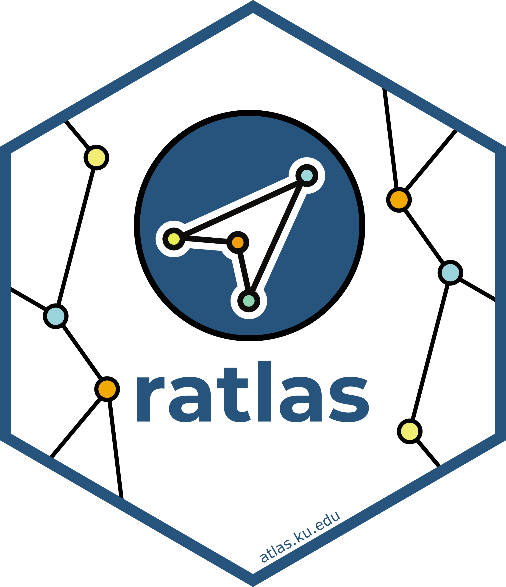

Lessons from Submitting an R Package to CRAN
June 24, 2026

Note:
ratlaswas recently archived on CRAN due to a dependency being removed. We’re actively working to get it back, but these submission lessons still apply!
Submitting ratlas to CRAN was one of those experiences that makes you a better
R developer. There’s a lot of
back-and-forth, and each round of feedback teaches you something new about
writing clean, considerate package code. Here are the lessons that stuck with me.
1. Start with usethis::use_release_issue()
This function sets up a structured checklist that guides you through the release process, and it’s the best place to start. It will prompt you to choose a version type:
- Major — A significant change that would be expected to break users’ code. Reserved for significant redesigns.
- Minor — A minor version update means that new functionality has been added to the package. It might include new functions or improvements to existing functions that are compatible with most existing code.
- Patch — Patch updates are bug fixes. They solve existing issues but don’t do anything new.
For an initial release, 0.1.0 is the standard starting point.
2. Every exported function needs @return and @examples
CRAN wants clear and comprehensive documentation, no exceptions. Every exported function
needs a @return tag, even if it doesn’t return anything! For example, set_theme() is a function in my package that doesn’t return anything, so I made sure to specify 'None' in the documentation and included examples of usage.
3. Package anchors in Rd files
CRAN flagged missing anchors in my Rd files early on. The rule: if you’re
linking to a function that isn’t in your package or base R, you need to specify
the package. So instead of just discrete_scale(), it should be
ggplot2::discrete_scale(). A small thing, but CRAN is strict about it.
4. Watch out for line breaks, file paths, and par() changes
A few environment-related issues came up together:
- A stray line break in an Rd file caused an error in
only_if() - Writing to a user’s home directory isn’t allowed. Use
tempdir()as the default for any temporary files (I fixed this inggsave2()) - If your examples change
par()settings, reset them afterward so they don’t affect the user’s environment
5. No shop links in documentation
CRAN does not allow links to online stores, such as Amazon. I had originally included a link to the ggplot2 book on Amazon in a vignette, which CRAN flagged. I fixed this issue by including a link to the publisher’s page instead.
6. Don’t use if(FALSE){} and @examplesIf in your examples
I had been using @examplesIf (which compiles to if(FALSE){}) to skip examples
that depended on missing packages. CRAN recommends these preferred
alternatives:
\dontrun{}— for examples that would genuinely error\donttest{}— for examples that are long-running or environment-dependent
7. But don’t overuse \dontrun{} either
CRAN pushes back on \dontrun{} if it seems unnecessary. Their preference is
that examples actually run, so if \donttest{} is sufficient, use that. For
functions like ggsave2(), I had to either justify \dontrun{} or switch to
\donttest{}. The takeaway: CRAN takes running examples very seriously!
The CRAN review process is thorough by design, which is what makes the repository
trustworthy. If you’re preparing your own submission, usethis::use_release_issue()
and devtools::check() will catch a lot before you submit. While the process does come with a learning curve,
it ultimately pushes you to write cleaner, more reliable code, create thorough documentation, and think carefully about how your work will perform in different user environments.
Hopefully these reflections make the process a bit smoother for others preparing to take it on, and when CRAN does come back with notes, treat each one as a specific, fixable improvement that will strengthen your package not just for yourself, but for the entire community.
- Posted on:
- June 24, 2026
- Length:
- 3 minute read, 621 words
- Tags:
- R CRAN package development
- See Also: